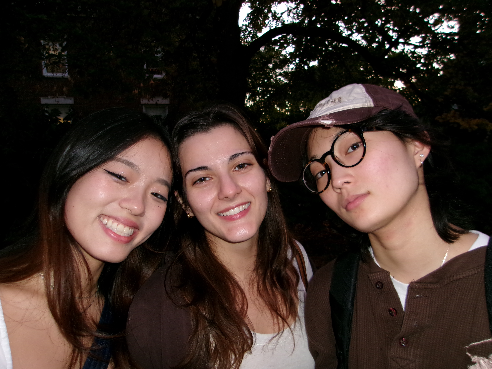
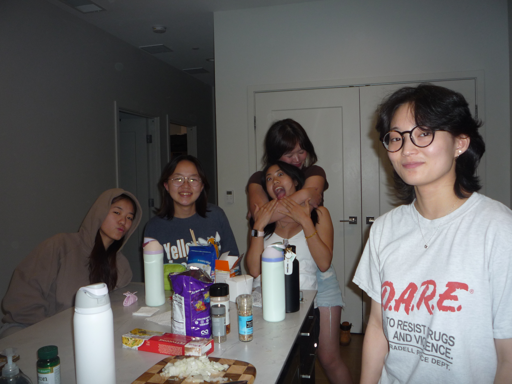
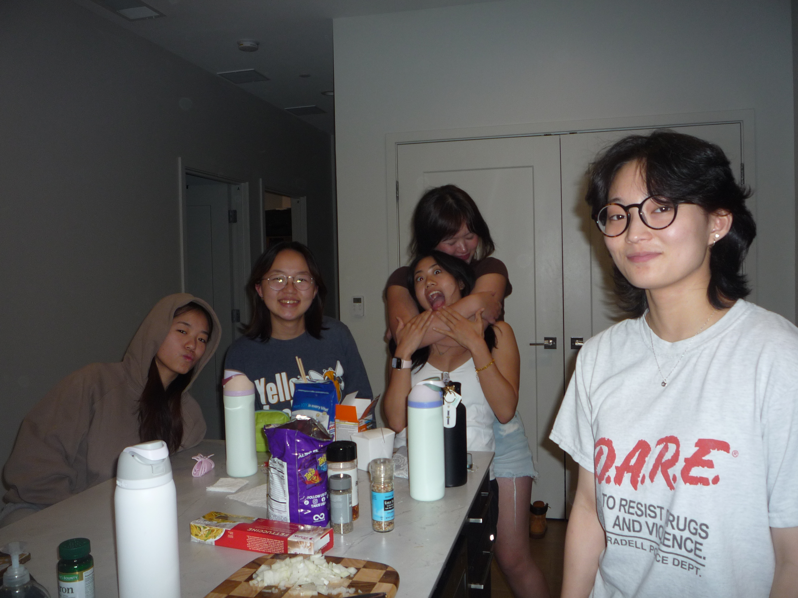

you probably already know a lot of things about katie, like how she's now a senior and likes to keep her hair short, and that she's traveled quite a bit this year...
about katie


...but there's a lot more to katie. she enjoys to work on her coding projects, but you might also catch her listing clothes on depop that no longer speak to her (or scouring for her next signature piece...), discovering new music and organizing her spotify playlists, or petting every cute animal (even though she's allergic).

she may call herself shy, but if you ever walk with her through campus or a group gathering, you'll see so many of her friends run up to her to say hi, and you'll realize just how many people's days she lights up. if you continue hanging out with her, you'll also see that she would never leave a wrapper on the table or not clean up after herself and others —— she wouldn't anything to inconvenience people or be inconsiderate. you'll realize also that she's wonderful listener, and under her cool facade has a very sensitive heart.
 


things katie loves
- thrifting for cool clothes (she calls it drip)
- wearing hats and silver jewelry
- butter pecan ice cream
- being considerate of other people
- playing clash of clans
- computer science and coding (it's been her dream career since high school!)
- her doggies pom pom and julie
- quality time <3


things katie has picked up more since she turned 20
- cooking new recipes
- black tea & grumpy cats
- cafe-hopping
- a lot more that won't fit here...